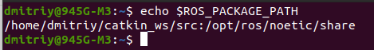
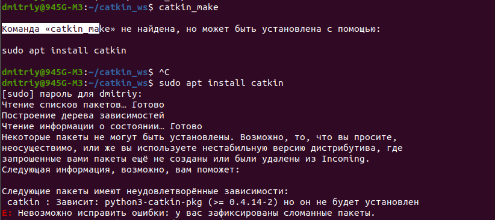
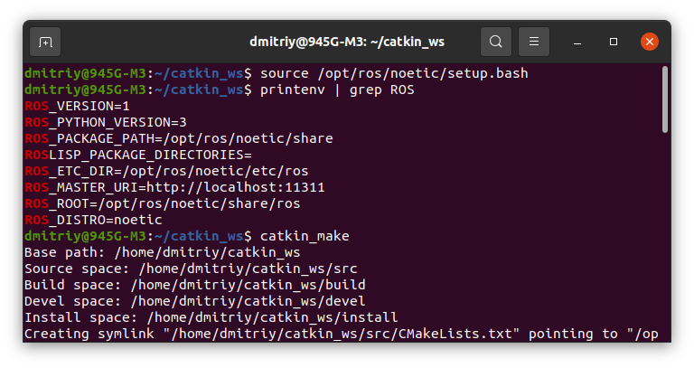
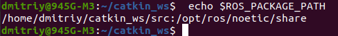

Установка ROS
Список дистрибутивов ROSСтраницы установок ROS2: Humble, Iron, and Rolling.
Выбор установки ROS Noetic Ninjemys в зависимости от ОС
Установка ROS noetic на ubuntu
Установка ROS noetic на ubuntu на русском
Установка (из учебника братьев Волт)
- Сайт packages.ros.org внесём в список sources.list.d:
sudo sh -c 'echo "deb http://packages.ros.org/ros/ubuntu $(lsb_release -sc) main" > /etc/apt/sources.list.d/ros-latest.list'
- Установить ключи:
sudo apt install curl # если curl ещё не установлен
curl -s https://raw.githubusercontent.com/ros/rosdistro/master/ros.asc | sudo apt-key add -
- Установка
Убедитесь, что ваш индекс пакетов Debian обновлен:sudo apt update
Выберите в каком комплектации установить:
Desktop-Full Install: (Recommended) : Everything in Desktop plus 2D/3D simulators and 2D/3D perception packages
- sudo apt install ros-noetic-desktop-full
- Desktop Install: Everything in ROS-Base plus tools like rqt and rviz
sudo apt install ros-noetic-desktop
- ROS-Base: (Bare Bones) ROS packaging, build, and communication libraries. No GUI tools.
sudo apt install ros-noetic-ros-base
Я выбрал: sudo apt install ros-noetic-desktop-full
Не удалось загрузить некоторые архивы, connect (101: Сеть недоступна) [IP: 213.180.204.183 80]
Решение этой проблемы нашел в статье Как установить ROS NOETIC на UBUNTU 20.04: в программе "Программы и обновления" поменял сервер (был сервер РФ, стал основной) и поставил галочки кое-где.Чтобы убедиться, что установили ROS, достаточно ввести ros и раза два нажать клавишу Tab, должны вывести список команд ROS.
Поиск и установка отдельных пакетов ROS
В ROS доступно еще больше пакетов. Вы всегда можете установить определенный пакет напрямую.sudo apt install ros-noetic-PACKAGE
Например:
sudo apt install ros-noetic-slam-gmapping
To find available packages, see ROS Index or use:
apt search ros-noetic
Настройка ROS:
- Настройка рабочего окружения:
Настройка рабочих параметров ROS, происходит через установку переменных окружения (например пути библиотек, адреса серверов и тд). Эту операцию можно делать руками, но проще настроить их автоматический экспорт через выполнение скрипта setup.bash при запуске интерактивной оболочки bash:
echo "source /opt/ros/noetic/setup.bash" >> ~/.bashrc
source ~/.bashrcЕсли вы просто хотите загрузить переменные ROS в текущем сеансе, то вы можете ввести:
source /opt/ros/noetic/setup.bash
Переменные окружения:
Существует множество переменных среды, которые вы можете настроить так, чтобы они влияли на поведение ROS. Из них наиболее важными для понимания являются ROS_MASTER_URI, ROS_ROOT и ROS_PACKAGE_PATH, поскольку они широко используются в системе и часто упоминаются в документации.Переменные среды выполняют различные функции в ROS:
- Поиск пакетов: Прежде всего, ROS_ROOT и ROS_PACKAGE_PATH позволяют ROS находить пакеты и стеки в файловой системе. Вы также должны задать PYTHONPATH, чтобы интерпретатор Python мог находить библиотеки ROS.
- Влияние на среду выполнения узла: Существует также несколько переменных среды ROS, которые влияют на то, как работает узел. ROS_MASTER_URI - важная переменная среды, которая указывает узлу, где находится главный узел. ROS_IP и ROS_HOSTNAME влияют на сетевой адрес узла, а ROS_NAMESPACE позволяет изменять его пространство имен. ROS_LOG_DIR позволяет указать каталог, в который записываются файлы журнала. Многие из них также могут быть переопределены путем переопределения аргументов, которые имеют приоритет над переменными среды.
- Изменение системы сборки: ROS_BINDEPS_PATH, ROS_BOOST_ROOT, ROS_PARALLEL_JOBS и ROS_LANG_DISABLE влияют на то, где находятся библиотеки, как они создаются и какие из них создаются.
Эти и другие переменные среды более подробно описаны ниже.
В большинстве систем также будет установлен ROS_PACKAGE_PATH, но единственными необходимыми переменными среды для ROS являются ROS_ROOT, ROS_MASTER_URI и PYTHONPATH. По умолчанию они автоматически устанавливаются для вас с помощью source /opt/ros/ROSDISTRO/setup.bash. (Замените ROSDISTRO на желаемый дистрибутив ROS, например noetic.)- ROS_ROOT задает местоположение, в котором устанавливаются пакеты ROS.
- ROS_MASTER_URI - это обязательный параметр, который указывает узлам, где они могут найти главный сервер мастера. Он должен быть установлен в XML-RPC URI главного сервера. При использовании localhost следует соблюдать большую осторожность, так как это может привести к непредвиденному поведению удаленно запущенных узлов.
- ROS требует, чтобы ваш PYTHONPATH был обновлен, даже если вы не программируете на Python! Многие инструменты инфраструктуры ROS основаны на Python и нуждаются в доступе к пакету roslib для начальной загрузки.
- ROS_PACKAGE_PATH - это необязательная, но очень распространенная переменная среды, которая позволяет вам добавлять дополнительные пакеты ROS из исходного кода в вашу среду. ROS_PACKAGE_PATH может состоять из одного или нескольких путей, разделенных стандартным разделителем путей вашей операционной системы (например, ':' в Unix-подобных системах). Эти упорядоченные пути указывают системе ROS, где искать другие пакеты ROS. Если имеется несколько пакетов с одинаковым именем, ROS выберет тот, который указан в ROS_PACKAGE_PATH первым.
 - ROS_IP и ROS_HOSTNAME являются необязательными переменными среды, которые задают объявленный сетевой адрес узла или инструмента ROS. Эти параметры являются взаимоисключающими, если заданы оба параметра, приоритет будет иметь ROS_HOSTNAME. Используйте ROS_IP, если вы указываете IP-адрес, и ROS_HOSTNAME, если вы указываете имя хоста. Когда компонент ROS сообщает URI главному или другим компонентам, это значение будет использоваться. Эта настройка необходима только в тех случаях, когда у вас есть несколько адресов для компьютера и вам необходимо принудительно использовать ROS для определенного из них.
За исключением "localhost", это не влияет на фактический привязанный адрес, поскольку компоненты ROS привязываются ко всем доступным сетевым интерфейсам. Если для параметра установлено значение "localhost", компонент ROS будет привязываться только к интерфейсу обратной связи. Это предотвратит возможность взаимодействия удаленных компонентов с вашим локальным компонентом.
- Инструменты для создания пакетов:
На данный момент вы установили все необходимое для запуска основных пакетов ROS. Для создания собственных рабочих пространств ROS и управления ими существуют различные инструменты и требования, которые распространяются отдельно. Например, rosinstall - это часто используемый инструмент командной строки, который позволяет вам легко загружать множество деревьев исходных репозиториев для пакетов ROS с помощью одной команды.
rosinstall, например, для многих пользователей на начальном этапе просто не нужен, хотя бы потому что он больше интересен при чистой установке окружения на новых роботов, а при разработке люди либо используются бинарными пакетами, устанавливая их ручками через apt. Другой пример — при обычном пользовании совершенно не важно знать разницу между инсталяциями ros-noetic-desktop и ros-noetic-desktop-full, хотя бы потому что для компьютера разработчика чаще всего просто ставится full (благо машины разработчиков обычно почти бездонные), а вот на роботах лучше ставить base, а доустановку зависимостей производить тем же rosinstal (и в этот момент он начинает быть нужен на компе разработчика, ведь файлы описаний нужно еще написать и проверить).
Чтобы установить этот инструмент и другие зависимости для создания пакетов ROS, запустите:
sudo apt install python3-rosdep python3-rosinstall python3-rosinstall-generator python3-wstool build-essential
Установка rosdep:
Прежде чем вы сможете использовать многие инструменты ROS, вам необходимо инициализировать rosdep. rosdep позволяет легко устанавливать системные зависимости для исходного кода, который вы хотите скомпилировать, и необходим для запуска некоторых основных компонентов в ROS. Если вы еще не установили rosdep, сделайте это следующим образом:sudo apt install python3-rosdep
With the following, you can initialize rosdep.
sudo rosdep init
rosdep update
Установка закончена.
Создание рабочей области ROS:
Catkin — это система сборки, используемая в ROS для управления исходным кодом.
Рабочая область catkin представляет собой каталог, в котором вы можете создавать или изменять собственные пакеты ROS.
Сперва создадим рабочее пространство catkin_ws с внутренней папкой src.
mkdir -p ~/catkin_ws/src
cd ~/catkin_ws/
Это создаст каталог catkin_ws в домашнем каталоге, а также каталог src внутри catkin_ws.
Сборка рабочей области (наверное не рабочей области, а пакетов, как по книге братьев Вольт и правильнее делать после установки ROS инициализацию рабочего пространства):
catkin_make
Это создаст два дополнительных каталога в каталоге catkin_ws: build и devel, которые содержат продукты сборки и среды сборки соответственно. Также внутри src создастся файл CMakeLists.txt.
catkin_make - это инструмент командной строки, который используется для прописки в системе пакетов ROS. Он является оболочкой команды make и предоставляет ряд функций, которые упрощают создание пакетов ROS. Например, catkin_make может автоматически загружать зависимости, параллельно создавать несколько пакетов и создавать манифест пакета.
Пытался выполнить команду catkin_make, получил ответ, что catkin еще не установлен. Когда пытаюсь установить, то получаю:

Не знаю, что помогло, выполнил только команды:

Но мне помогло. А вообще в Установка и настройка рабочего окружения ROS пишут, что если установлен Python 3, как у меня, то в первый раз нужно выполнить команду:
$ catkin_make -DPYTHON_EXECUTABLE=/usr/bin/python3
Эта команда позволит настроить catkin_make с помощью Python 3. Затем вы можете использовать только catkin_make для последующих сборок.
Как бы там ни было, но в catkin_ws создал build , devel, а внутри src CMakeLists.txt.
Далее нужно выполнить команду в catkin_ws:
$ source devel/setup.bash
Чтобы каждый раз не выполнять эту команду при запуске терминала, добавим эту команду в автозагрузочный файл терминала .bashrc:
echo "source ~/catkin_ws/devel/setup.bash" >> ~/.bashrc
source ~/.bashrc
Чтобы убедиться, что setup.bash правильно распределил ваше рабочее пространство, убедитесь, что переменная окружения ROS_PACKAGE_PATH содержит каталог, в котором вы находитесь, команда:
echo $ROS_PACKAGE_PATH

Теперь вы готовы к созданию и управлению вашими собственными пакетами ROS в рабочей области catkin.
Дополнительные мысли насчёт сборки рабочего пространства:
В книге братьев Вольт после создания рабочего пространства вместо команды сборки используется команда инициализации рабочего пространства:
mkdir -p ~/catkin_ws/src
cd ~/catkin_ws/src
catkin_init_workspace
Видимо в первый раз после установки ROS, когда еще нет созданных пакетов можно использовать инициализацию раб. пространства, а потом после каждого нового пакета нужно использовать команду сборки раб. пространства.
По умолчанию, пакеты ROS при установке через apt-get устанавливаются в директорию /opt/ros/melodic/share.
Для удобства работы, проще всего добавить еще одну директорию, где ROS должен искать установленные пакеты. Тогда установленные пакеты через apt-get будут располагаться в обычном для них месте, а наши пакеты будут находиться в домашней директории пользователя ~/catkin_ws/src/.
Если вы используете bash:
Команда catkin_make по умолчанию не прописывает в эту директорию созданные пакеты или скачанные с репозиториев.
echo "source ~/catkin_ws/devel/setup.bash" >> ~/.bashrc
source ~/.bashrc